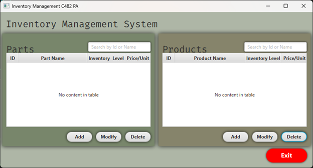

I worked through all of the basics of the material covering
up to classes and inhertiance and I felt like getting my
feet wet with practicing what I learned. I started by
working on the home screen for the Inventory program and
quickly realized how close fxml is to xml. The naming
comparison is balatently obvious, but for some reason, I
still did not expect the actual design of the langauge to be
so similar. I feel like I understand now why the school
taught me html and css. Not only is it a good way to get
those new to coding to think more programatically, but it is
also still relevant in modern software development. I also
learned in the last few days that dotNet also directly
utilizes markup language and a model/view/controller concept
for design. I am confident that this is going to expedite my
learning of java and I feel like I understand software
design a lot better overall now.
Here is my finished design of the home screen. I have not
added any logic to the program yet, so this is basically a
super high fidelity wireframe for what the final product
will look like.

I don't think my color usage is something that I would put
into production on real products I develop. I do like color
for my personal projects because it helps visual distinguish
different focus points on screen. Using the muted colors
also prevents the color from becoming distracting and
drawing attention away from what the user is actually trying
to accomplish on screen. My color choice is an attempt to
create a forest theme.
I placed the exit button in red on the bottom right of the
program for a specific reason. I recently completed a UX
class and had to submit a website I developed for review by
peers. No one that reviewed my website ever found the
question mark icon at the bottom right of the page that
wouold have led them to the FAQ page. I did color the
question mark blue, so I want to determine if it was color
or button location that led people to not see it. Other than
wanting to experiement with this idea, I don't particularly
like the location of the exit button.
I wanted the add, modify, and delte buttons to resemble the
old gameboy start and select buttons. I think I got the
shape close but the color of the original buttons are too
dark to work with black text so I chose to just utilitze the
shape.
Next I want to work on getting the add buttons to
successfully open a new window and display a new styled page
for adding parts and adding products. This will be my first
time working with Event handlers and opening new windows.